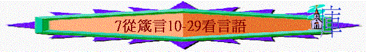

|
所羅門箴言第一集 |
所羅門箴言第二集 |
所羅門箴言第三集 |
其他人的言語附篇 |
|
1 - 9 |
10-24 |
25-29 |
30-31 |
一.不好的言語
1.讒謗的話
「隱藏怨恨的，有說謊的嘴；口出讒謗的，是愚妄的人。」10:18
2.說謊的話
「隱藏怨恨的，有說謊的嘴；口出讒謗的，是愚妄的人。」10:18
3.浮躁的話
「說話浮躁的，如刀刺人；智慧人的舌頭卻為醫人的良藥。」12:18
4.諂媚的話
「虛謊的舌恨他所壓傷的人；諂媚的口敗壞人的事。」26:28
∼諂媚：巴結與奉承的話
5.傳舌的話
「往來傳舌的，洩漏密事；大張嘴的，不可與他結交。」20:19
6.乖謬的話
「義人的嘴能令人喜悅；惡人的口說乖謬的話。」10:32
7.驕傲的話
「愚妄人口中驕傲，如杖責打己身；智慧人的嘴必保守自己。」14:3
二.惡言的禍害
1.挑啟爭端
「愚昧人張嘴啟爭端，開口招鞭打。」18:6
2.敗壞他人
「虛謊的舌恨他所壓傷的人；諂媚的口敗壞人的事。」26:28
「不虔敬的人用口敗壞鄰舍；義人卻因知識得救。」11:9
「溫良的舌是生命樹；乖謬的嘴使人心碎。」15:4
3.自取敗亡
「謹守口的，得保生命；大張嘴的，必致敗亡。」13:3
三.良言的益處
1.令人喜悅
「義人的嘴能令人喜悅；惡人的口說乖謬的話。」10:32
「公義的嘴為王所喜悅；說正直話的，為王所喜愛。」16:13
2.自己得福
「人因口所結的果子，必享美福；奸詐人必遭強暴。」13:2
「謹守口的，得保生命；大張嘴的，必致敗亡。」13:3
「謹守口與舌的，就保守自己免受災難。」21:23
3.別人有益
「說話浮躁的，如刀刺人；智慧人的舌頭卻為醫人的良藥。」12:18
4.永遠長存
「口吐真言，永遠堅立；舌說謊話，只存片時。」12:19
四.當說的話語
1.良言
「人心憂慮，屈而不伸；一句良言，使心歡樂。」12:25
2.合宜的話
「一句話說得合宜，就如金蘋果在銀網子裡。」25:11
3.責備的話
「一句責備話深入聰明人的心，強如責打愚昧人一百下。」17:10
4.恩言
「喜愛清心的人因他嘴上的恩言，王必與他為友。」22:11
5.正直的話
「公義的嘴為王所喜悅；說正直話的，為王所喜愛。」16:13
6.正義的話
「你當為啞巴（或作：不能自辯的）開口，為一切孤獨的伸冤。」31:8
7.真實的話
「口吐真言，永遠堅立；舌說謊話，只存片時。」12:19
五.說話的技巧
1.少言
「多言多語難免有過；禁止嘴唇是有智慧。」10:19
2.溫柔
「溫良的舌是生命樹；乖謬的嘴使人心碎。」15:4
3.思索
「義人的心，思量如何回答；惡人的口吐出惡言。」15:28
4.謹守
「謹守口的，得保生命；大張嘴的，必致敗亡。」13:3
5.靠神
「心中的謀算在乎人；舌頭的應對由於耶和華。」16:1